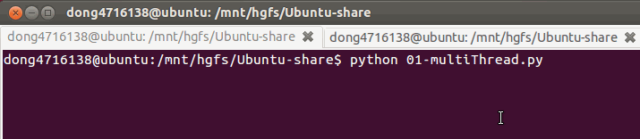

创建线程的另外一种方式
1. 引入
之前创建线程的基本流程是：
使用threading.Thread()创建一个对象，并且在使用target来指定一个函数，作为线程要执行的代码
封装性更好的一种创建线程的方式是：
- 定义一个新的类，继承Thread类
- 在这个类中实现run方法
- 在run方法中写如要执行的代码
- 当使用这个类创建一个对象后，调用对象的start方法就可以让这个线程执行，且会自动执行run方法的代码
2. 示例代码
import threading
import time
class MyThread(threading.Thread):
def run(self):
for i in range(3):
msg = "I'm "+ self.name + ' @ '+str(i) # name属性中保存的是当前线程的名字
print(msg)
time.sleep(1)
if __name__ == '__main__':
t = MyThread()
t.start()
2.1 运行效果

2.2 说明
- python的threading.Thread类有一个run方法，用于定义线程的功能函数可以在自己的线程类中覆盖该方法。
- 创建线程对象后，调用start方法，可以启动该线程
- 当该线程获得执行的机会时，就会调用run方法执行线程的功能
- run方法中可以编写本线程需要执行的代码
3. 小结
- 每个线程默认有一个名字，尽管上面的例子中没有指定线程对象的name，但是python会自动为线程指定一个名字。
- 当线程的run()方法结束时表示该线程结束
- 既然run方法是个示例方法，那么也就意味着可以调用本类中的其它实例方法，从而能够编写出较为复杂的功能